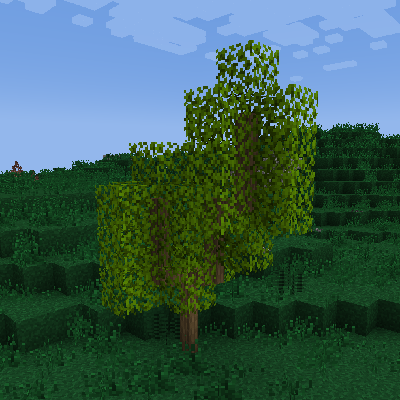

野生水果
許多不同種類的野生水果生長在世界各地。可以直接吃掉它們，或用合適的工具來種植。通常來說，它們會以三種不同的形式出現：果樹、高大灌木、或小型灌木。
所有會結果的植物都有屬於自己的生命週期。它們每年都會生長、開花、結果、然後休眠。
果木的生長是有季節性的。在冬眠的季節中，它們會看上去像枯死了一般。而到了春天，它們則會長出翠綠的新枝，準備開花結果。每種水果的具體結果時間因樹而異。另外，果木也會因衰老、或處於不當的氣候環境中而死亡。
果樹
果樹會從一棵小樹苗長成高大的果樹。果樹的樹枝是它們最重要的部分，而且只要氣候環境合適就會持續生長。隨著果樹不斷成長，它們會在樹枝周圍長出樹葉。樹葉會在合適的季節中開花結果。
一棵典型的果樹。
果樹是由樹苗長成的。樹苗只會在非休眠期的季節中生長出果樹的第一塊樹幹。最終長成的果樹的大小和最初放置了多少樹苗呈正相關。
可以在一格中透過枝接的方式放置多個樹苗。要枝接兩棵樹苗，只需要在副手拿著一把刀的同時手持樹苗點選右鍵即可。
樹苗也可以嫁接在果樹的第一節將要向上拐彎的枝幹方塊的正上方（要先破壞原本上方已有的樹枝）。這樣一來，一棵果樹上就可以結出幾種不同的果實。用斧破壞這種枝幹會掉落樹苗。要收穫果實，只需要在果樹結果的季節對準樹葉按下右鍵即可。每個樹葉方塊會產出一顆果實。在此之後，樹葉方塊會重新進入生長階段，直到季節再次變化，果樹進入休眠為止。
櫻桃樹
適宜溫度: 5 - 25 °C
適宜降雨量: 100 - 350mm
多方塊結構
櫻桃樹的每月變化
綠蘋果樹
適宜溫度: 1 - 25 °C
適宜降雨量: 110 - 280mm
多方塊結構
綠蘋果樹的每月變化
檸檬樹
適宜溫度: 10 - 30 °C
適宜降雨量: 180 - 470mm
多方塊結構
檸檬樹的每月變化
橄欖樹
適宜溫度: 5 - 30 °C
適宜降雨量: 150 - 500mm
橄欖的一大用途是用於製作燈油.
多方塊結構
橄欖樹的每月變化
橙子樹
適宜溫度: 15 - 36 °C
適宜降雨量: 250 - 500mm
多方塊結構
橙子樹的每月變化
桃樹
適宜溫度: 4 - 27 °C
適宜降雨量: 60 - 230mm
多方塊結構
桃樹的每月變化
李子樹
適宜溫度: 15 - 31 °C
適宜降雨量: 250 - 400mm
多方塊結構
李子樹的每月變化
紅蘋果樹
適宜溫度: 1 - 25 °C
適宜降雨量: 100 - 280mm
多方塊結構
紅蘋果樹的每月變化
香蕉樹
適宜溫度: 17 - 35 °C
適宜降雨量: 280 - 500mm
香蕉樹與其他果樹不同，它們只會一直向上生長，沒有樹葉，且其果實只會結在最頂端的方塊。破壞開花的部分能獲得香蕉樹苗。香蕉樹一旦被收穫就會死亡，不能再長出果實了，必須在次年春天重新種植。
多方塊結構
一棵典型的香蕉樹
大型灌木
某些水果會長在大型灌木中。這種灌木可以向各個方向生長並擴散。它們既可以向上生長，也可以向四周生長出新的藤條。藤條在一段時間之後也會變成新的灌木。灌木直到完全成熟之前都會試圖擴張。使用鋒利工具來破壞這些灌木有機率掉落一株灌木（破壞完全成熟的灌木則必定掉落）。

一株野生灌木。
大型灌木必須在有方塊供其藤條紮根時才會擴張。換句話說，想讓它擴散，則必須在它周圍正下方放一塊實心方塊。最好還要把地整平，並清掉附近的雜草雜物。
果樹能否生長只取決於當地的降雨量，而灌木則會主動吸收周圍水源方塊的水分，從而能夠生長在較為乾旱的環境。
完全成熟的灌木方塊會產出水果，點選右鍵就可以收穫。
黑莓灌木
適宜溫度: 7 - 24 °C
適宜溼度: 24 - 100 %
黑莓灌木只會生長在樹林稀疏的區域。
多方塊結構
黑莓灌木的每月變化
樹莓灌木
適宜溫度: 5 - 25 °C
適宜溼度: 24 - 100 %
樹莓灌木只會生長在樹林稀疏的區域。
多方塊結構
樹莓灌木的每月變化
藍莓灌木
適宜溫度: 7 - 29 °C
適宜溼度: 12 - 100 %
藍莓灌木只會生長在樹林稀疏的區域。
多方塊結構
藍莓灌木的每月變化
接骨木灌木
適宜溫度: 10 - 33 °C
適宜溼度: 12 - 100 %
接骨木灌木灌木只會生長在樹林稀疏的區域。
多方塊結構
接骨木灌木的每月變化
小型灌木
小型灌木是一種生長在樹林中的低矮灌木。小型灌木偶爾會向其四周生長擴散。它們點選右鍵就能收穫。
多方塊結構
御膳橘
適宜溫度: 15 - 35 °C
適宜溼度: 24 - 100 %
多方塊結構
鵝梅灌木
適宜溫度: 5 - 27 °C
適宜溼度: 24 - 100 %
多方塊結構
雪梅灌木
適宜溫度: -7 - 18 °C
適宜溼度: 24 - 100 %
多方塊結構
雲梅灌木
適宜溫度: -2 - 17 °C
適宜溼度: 9 - 100 %
多方塊結構
草莓灌木
適宜溫度: 5 - 28 °C
適宜溼度: 12 - 100 %
多方塊結構
冬青梅灌木
適宜溫度: -6 - 17 °C
適宜溼度: 12 - 100 %
多方塊結構
蔓越莓
適宜溫度: -5 - 17 °C
蔓越莓灌木只能種植在水中。